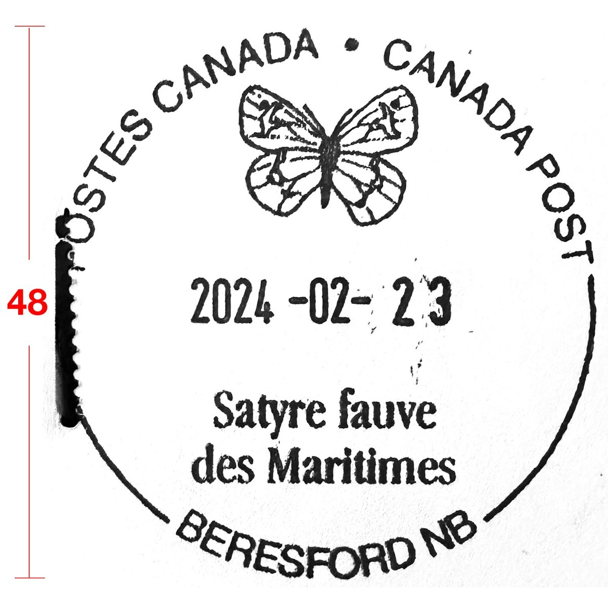

Beresford Main PO pictorial cancel
Satyre fauve des Maritimes
- Status
- Active
- Run dates
- ? to present
- Design
- "Satyre fauve des Maritimes"; Maritime ringlet (butterfly)
- Ink colour
- Black
- Designer
- Unknown
- Post office
- Beresford Main PO
767 Rue Principale, Beresford, NB
E8K 1H0 - Subjects
- butterfly, insect, animal
Collect it by mail. Send your stamped covers, with a stamped return envelope, to the post office address above. How to collect pictorial cancels by mail · en français
 Tide Head PORestigouche 1760
Tide Head PORestigouche 1760 St-Louis-de-Kent Main POBerceau du drapeau acadien
St-Louis-de-Kent Main POBerceau du drapeau acadien Plaster Rock POWorld Pond Hockey Championship
Plaster Rock POWorld Pond Hockey Championship New Denmark POOldest Danish Settlement in Canada
New Denmark POOldest Danish Settlement in Canada Juniper POTrain, fish, trees
Juniper POTrain, fish, trees